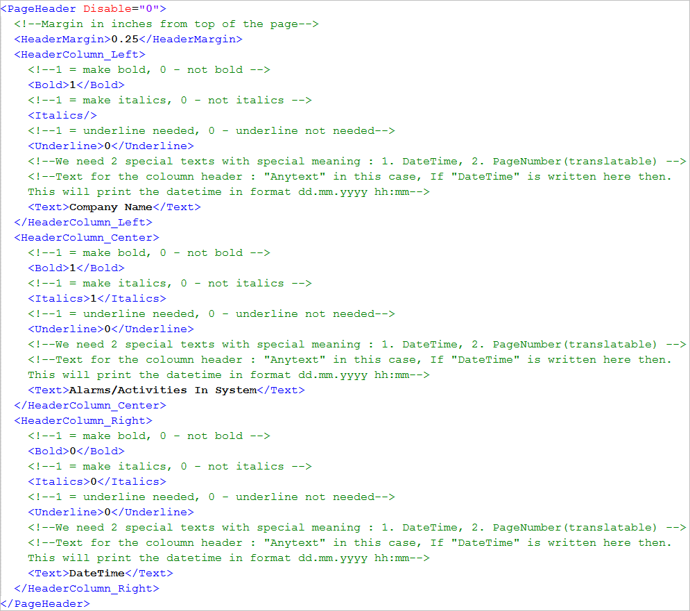

Configure Journaling Page Headers
- In the <PageSetp> section of the template file, navigate to the <PageHeader> section.
- (Optional) In <PageHeader>, specify Disable = “1” to disable the page header in the print out, and Disable = “0” to enable the Page Header in the print out. The default is Disable = “0”.
- Enter a value, in inches, for the top header margin within the <HeaderMargin> tag.
- Specify the text to be displayed in the left header column by entering the value within the <Text> tag in the <HeaderColumn_Left> tag.
- Specify the formatting options (Bold, Italics, Underline) for the text by entering either 0 (normal text) or 1 (formatted text) within the <Bold>, <Italics>, or <Underline> tags in the <HeaderColumn_Left> tag.
- Repeat steps 2 to 5 to set the text and their corresponding formatting options for the center and right header columns using the <HeaderColumn_Center> and <HeaderColumn_Right> tags respectively.
